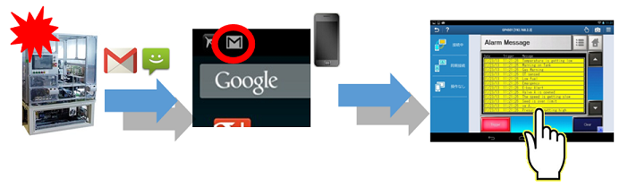

|
|
|
|
|
|
|
|
You must first download the Vijeo Design'Air Plus application from the application marketplace (for example, Google Play or App Store), and launch the App. When the App starts up, it runs the Discovery mechanism that performs the following functions:
Broadcasts a UDP query to a local area network. If a target machine that hosts a tablet/smartphone application and has Target Discovery enabled receives this query, the target machine will send a response to the tablet/smartphone.
Refreshes the list of target machines that respond from the network.
Maintains a list of all the target machines that respond to the UDP query.
This section describes how to:
Remove a tablet/smartphone application from the Favorite list
Obtain information on the Tablet application and on the target machine
When setting up the tablet/smartphone project in Vijeo Designer, the project designer can opt to enable or disable security. If security is enabled, at run time operators must log in successfully before they can download and open the tablet/smartphone application.
To make sure that only a valid user can open a tablet/smartphone application, the Login window displays in the following instances:
Before the tablet/smartphone can download a selected application. The operator must enter a valid username and password in order to download the application from the host target machine.
After the tablet/smartphone is switched off and then is switched back on. When the operator wants to open a downloaded application on a tablet/smartphone that had just been powered back on, the operator must enter a valid username and password.
After you close the App. When the operator wants to enter the App again, the operator must enter a valid username and password.
If the operator enters an invalid username or password, or does not have rights to download the tablet/smartphone application, the following error message displays:
Connection refused by server.
The operator can try again by entering a valid username and password. If the username and password are valid, then the operator has insufficient rights. For more information on how to set up the rights to download a tablet/smartphone application, see step 4 in Section 23.1.1.1, Setting Up a Tablet/Smartphone Project.
Select the Vijeo Design'Air Plus application on your tablet/smartphone.
Select a tablet/smartphone application on a target machine.
On an Android device, the Main View displays the Project List, which lists all the applications on the network, and the Favorites List.
On an iOS device, only the Favorites list
displays on the main window. Tap  to open Search Results to display all the applications on the network.
to open Search Results to display all the applications on the network.
Notice that the application thumbnail icon displays the base panel you selected in Vijeo Designer Editor. If you have not selected a thumbnail icon for the application, the Schneider Electric logo is used instead. For more information, see Section 4.5.1.1, General.
Also notice that the tablet/smartphone application state is indicated on the right side of the application's thumbnail:
- Indicates a tablet/smartphone application has no local cache copy. The application is not downloaded.
No icon - Indicates a tablet/smartphone application with a local cache copy is available, and it has an identical timestamp with the application on the server. The application is downloaded and is ready to run.
- Indicates a tablet/smartphone application with the local cache copy is available, but it has a different timestamp from the application on the server. A copy of the application has been downloaded but it does not match the one on the server.
- Alerts that you cannot run the tablet/smartphone application on this version of the Vijeo Design'Air Plus App. Update the App to the current version.
To update the list of applications shown
in the project and Favorite lists, tap  .
.
Tap the tablet/smartphone application thumbnail to launch the application.
(Android device) Long-press a tablet/smartphone application thumbnail.
-OR-
(iOS device) Tap on the application thumbnail.
In the menu that displays, tap Add to Favorites.
The tablet/smartphone application on the target machine you selected moves from the project list to the Favorites list. There are no duplicate copies made of a tablet/smartphone application; it is either in the project list or in the Favorites list.
(Android device) In the Favorites List, long-press a tablet/smartphone application thumbnail.
-OR-
(iOS device) On the tablet/smartphone application thumbnail in the Favorites List, tap .
In the menu that displays, tap Remove from Favorites.
Add a connection when:
You want to download a tablet/smartphone application on a target machine that is not in your current network.
In Vijeo Designer, the Target Discovery property in the Target properties is set to disabled.
Tap  to open the Add Connection dialog box.
to open the Add Connection dialog box.
In the Address field, enter the IP address.
In the Port field, enter the HTTP server port number.
Tap OK.
If the information you entered is valid, the connection is added, and the tablet/smartphone application is added to the project list. If it is invalid, an error displays.
(Android device) Long-press a tablet/smartphone application thumbnail to open the menu.
-OR-
(iOS device) Tap on the application thumbnail.
Tap More Info.
You can use the Settings menu to set up beep on touch and the wake-lock function. Beep on touch enables the tablet/smartphone to beep when the display is touched. The wake-lock function prevents the tablet from going into sleep mode.
Tap  to open the Settings menu.
to open the Settings menu.
Tap Touch Audio Feedback to set up beep on touch.
Tap Keep Device Awake During Connection to set up the wake-lock function.
The Purge Cache function removes the local copy of the tablet/smartphone application, but it still displays on the project list or Favorite list. You may want to purge a tablet/smartphone application if you do not plan on using it for a while.
(Android device) Long-press a tablet/smartphone application thumbnail to open the menu.
-OR-
(iOS device)
Tap on the application thumbnail. Or
tap  , select View Cache
Manager, and purge cache from the Cache Manager window.
, select View Cache
Manager, and purge cache from the Cache Manager window.
Select Purge Cache.
The local copy of the tablet/smartphone application is removed, but the thumbnail still displays on the list of tablet/smartphone applications with a different icon on the thumbnail. The icon indicates that the tablet/smartphone application is not in your cache, but it is detected in your network. Tap the application to download.
The Configure Devices function allows an operator to view a list of devices that a project shares variables with. If there is data sharing, the list displays device references for downloaded projects to the tablet/smartphone. Tap the device name to change the connection information.
(Android device) Long-press a tablet/smartphone application thumbnail to open the menu.
-OR-
(iOS device) Tap on the application thumbnail.
Tap Configure Device.
In the Devices window that opens, select a target machine.
In the next window, modify the data sharing connection by entering the IP address and port number.
Tap OK.

The IP address in Configure Device is set to the target machine's IP address by default. This creates problems for data sharing if a project is downloaded from the target machine via a remote connection (e.g., VPN) using an IP address that is different from the target machine's IP address. To resolve data sharing problems, manually set the IP address in Configure Device to the IP address used to download the project.

You can access the alarm page via an URL link.
For example: The Email or SMS message contains <airplus://192.168.1.1:8080/alarms>. On the tablet/smartphone, the user clicks the link to launch the project and open the corresponding alarm page.
For more information on sending an alarm link for Vijeo Design’Air Plus by Email or SMS, see 21.1.5.12 Setting Up Messages with Dynamic Content.
Mobile device receives Email or SMS message with alarm link.
User clicks on the link.
Vijeo Design'Air Plus opens and adds the project to Favorites if it has not already been added.
Project
begins to update or download.
Project is launched and then immediately opens the alarm page to display
the associated alarms in the project.